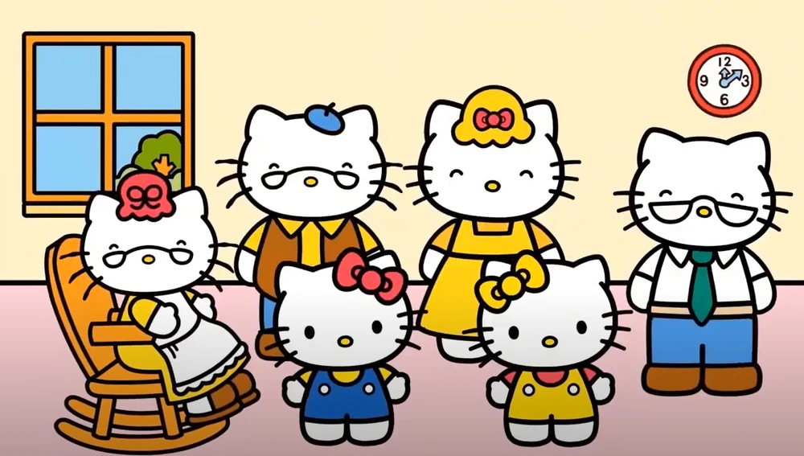

Mimmy White
Mimmy White é uma personagem fictícia criada pela empresa japonesa Sanrio. Ela é a irmã gêmea idêntica de Hello Kitty, compartilhando grande parte de suas características físicas, mas distinguindo-se por usar um laço amarelo na orelha direita. Reconhecida por seu temperamento tímido e gentil, Mimmy é uma das personagens mais antigas e queridas do universo Hello Kitty.

Aparência e design
Descrita como educada, tímida e sonhadora, Mimmy contrasta com a natureza mais extrovertida de Hello Kitty. Ela gosta de costurar, assar tortas e ler, e sonha em se casar quando crescer. Seu comportamento reservado e cuidadoso faz dela a voz calma e sensata da família White, trazendo equilíbrio à dupla de irmãs.
Família e ambiente
Mimmy vive com seus pais, George e Mary White, e seus avós em uma casa nos subúrbios de Londres. Ela estuda na terceira série, assim como Hello Kitty, e é próxima de personagens como Dear Daniel, Fifi, Cathy e Tippy. As duas irmãs compartilham uma amizade inseparável, frequentemente retratada em animações e jogos.
Legado e popularidade
Embora menos destacada que Hello Kitty, Mimmy mantém um grupo fiel de admiradores e participa do ranking anual de personagens da Sanrio. Ela é vista como símbolo de delicadeza e afeto, reforçando o tema de amor familiar e amizade que permeia o universo Hello Kitty.